更有型的外观设计
- 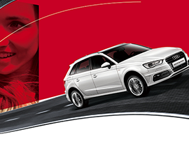
- 全新奥迪A3 Sportback汇聚了轿跑车般的车顶线条和动感硬朗的车身腰线，动感的掀背式造型设计突出了不断进取的运动设计风格。传承奥迪家族经典的一体式进气隔栅搭配独特的箭头造型前大灯，令它的前脸如此动感而迷人。既然性格无需隐藏，就让全新奥迪A3 Sportback陪你一起特立独行。
更强劲的TFSI®发动机
- 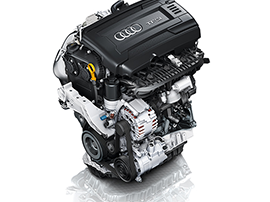
- 全新奥迪A3 Sportback可选配新一代1.4 TFSI发动机，百公里综合油耗仅需4.7升。如果你渴望更激情的驾驭，可选择1.8 TFSI发动机，匹配奥迪可变气门升程系统，可输出132千瓦最大功率、250牛•米最大扭矩，轻松实现235公里的最高时速。与S tronic®双离合变速器搭配，更令百公里加速只需7.2秒。
更敏捷的S tronic®双离合变速器
- 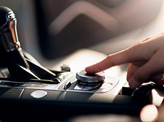
- 全新奥迪A3 Sportback配备的S tronic®双离合变速箱兼顾了更强动力与更低能耗。与TFSI®发动机的完美搭配，将奥迪A3 Sportback的动力与操控表现提升到了全新高度。S tronic®双离合变速箱的换挡之迅速，将充分释放你的驾驭激情，让专业赛手也为之感叹。
更节能的发动机启停系统
- 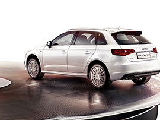
- 全新奥迪A3 Sportback配备了可随时关闭的发动机启停系统，当车辆在行驶过程中遇到红灯或其他情况停止时，发动机自动关闭；当你松开制动踏板时，发动机立即重 新启动。整个开闭过程均在你毫无察觉的状态下流畅进行，确保舒适驾驭的同时实现了油耗和二氧化碳的更低排放，从此无惧堵车带来的高油耗烦恼。
更轻盈的奥迪ultra轻量科技
- 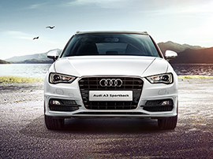
- 全新奥迪A3 Sportback使用了ultra轻量化车身技术，通过创新复合材料的使用，实现了灵活操控与安全强度的完美统一。先锋级的奥迪ultra轻量化车身技术，提升车身钢性的同时，减少了不必要的能量损耗，为你全力打造绿色无忧的旅程，带来更舒适的驾乘体验和卓越效能。
更安全的防止二次碰撞功能
- 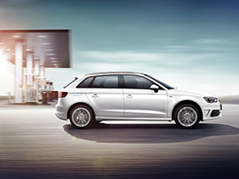
- 当车辆发生交通事故时，全新奥迪A3 Sportback将自动施加制动，尽量避免出现不受控制的滑行以及由此引发的二次碰撞，同时，危险警示信号灯和内部灯光将自动开启。如果碰撞不能避免，它将果断出手将损失与伤害降到最低。
更智能的MMI®多媒体交互系统
- 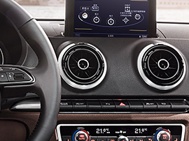
- 全新奥迪A3 Sportback搭载的新一代MMI®多媒体交互系统重新定义了车载信息娱乐系统，以更少的按钮带来更直观便捷的操作。其最特别之处便是配备了集成在中央控制旋钮上的触控轮，它可支持手写方式输入，让导航和电话功能变得轻松惬意。相信有那么一瞬间，你将体会到亲手触碰未来的感觉。
更浑厚的Bang & Olufsen音响
- 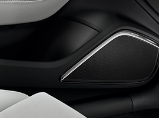
- 专门为全新奥迪A3 Sportback度身定制的丹麦Bang & Olufsen音响系统，配备了5.1环绕立体声系统和14个扬声器，可营造出逼真且震撼的环绕立体声。车内麦克风可监控环境噪音，使音量随车速与背景噪 音变化自动动态调整，让美妙音乐亦智能。你只需如同置身于专业的音乐演奏大厅，聆听世间最美妙的天籁之音。
更有型的外观设计
- 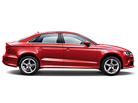
- 全新奥迪A3 Limousine将经典的三厢设计与双门轿跑理念完美融合。一体式进气格栅搭配彰显青春气息的LED车灯，再配以锐利灵动的尾部线条，无论与它相对还是跟随，都足以令你心驰神往。性感明快的腰线贯穿车身侧面，加上“旋风线”设计形成独特的光影效果，令整车外型更加动感和饱满。创新而简洁的设计语言赋予全新奥迪A3 Limousine更加灵活、动感的身姿。
更自由的全景天窗
- 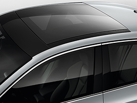
- 全新奥迪A3 Limousine的全景天窗由一块完整玻璃板构成，只为营造出舒适而明亮的专属空间，让你与午后阳光和浪漫星空不期而遇。网状结构遮阳帘，色彩与内饰融为一体，完美细节令你无法挑剔。集成式导风板，降低行驶风噪，让旅程在高速中静谧前行。
更强劲的TFSI发动机
- 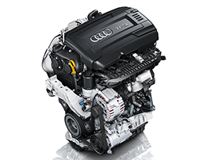
- 全新奥迪A3 Limousine搭载的新一代1.8 TFSI®发动机，匹配奥迪可变气门升程系统，其最大输出功率为132千瓦（180马力）、最大扭矩达250牛•米，在输出高动力的同时保证相对较低的油 耗。百公里加速仅需7.3秒，最高速度可达235公里/小时。当你唤醒它时，它已将澎湃力量汇集于你的脚尖。想释放你的激情？踩下油门便知。
更敏捷的S tronic®双离合变速器
- 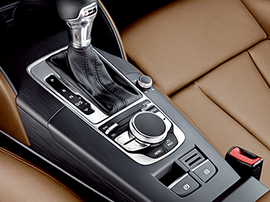
- 全新奥迪A3 Limousine所搭载的S tronic®双离合变速器能够以闪电般的速度，在你毫无察觉的情况下完成换挡动作，传动效率极高。换挡过程只需要0.2秒，你几乎感觉不到任何顿挫感。即使是赛车手，以他的换挡速度也难以匹敌你的速度。
更安全的ACC®自适应巡航控制系统
- 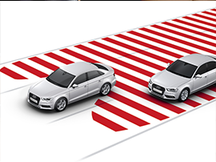
- 在高速及长途行驶过程中，奥迪A3 Limousine的自适应巡航控制系统（ACC®）始终监测前方路况，并可根据你的个性化设定自动保持与前车的安全距离。在车速65km/h以上时高清摄像头将监测道路标线，对可能发生的车道偏离发出警告并自动施加轻微转向干预，使车辆保持在车道上。从此，令长途驾驶的紧张与疲惫远离你，让沿途绝美的风景尽收眼底。
更轻盈的奥迪ultra轻量科技
- 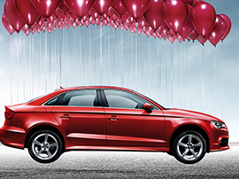
- 当你驾驶全新奥迪A3 Limousine时，灵活是印入脑海的第一印象，而强劲则是随之而来的直观动力感受。这源自于奥迪ultra轻量化车身技术，以创新结构设计和智能化的高强度材料应用，在提升安全性的同时为你带来完美的动感驾驶体验。
更智能的MMI®多媒体交互系统
- 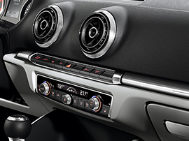
- 新一代MMI®多媒体交互系统让全新奥迪A3 Sportback重新定义了车载信息娱乐系统，以更少的按钮带来更直观便捷的操作。其最特别之处便是配备了集成在中央控制旋钮上的触控轮，它可支持手写方式输入，让导航和电话功能变得轻松惬意。指尖轻巧滑动，一切尽在掌握。
更浑厚的Bang & Olufsen音响
- 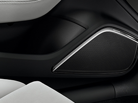
- 专门为全新奥迪A3 Limousine度身定制的丹麦Bang & Olufsen音响系统，配备了5.1环绕立体声系统和14个扬声器，可营造出逼真且震撼的环绕立体声。麦克风可监控环境噪音，使音量随车速与背景噪音变化自动动态调整，让音乐智能飞扬。此外，系统可根据高低音呈现不同的LED照明效果，使客舱的时尚氛围动感即现。